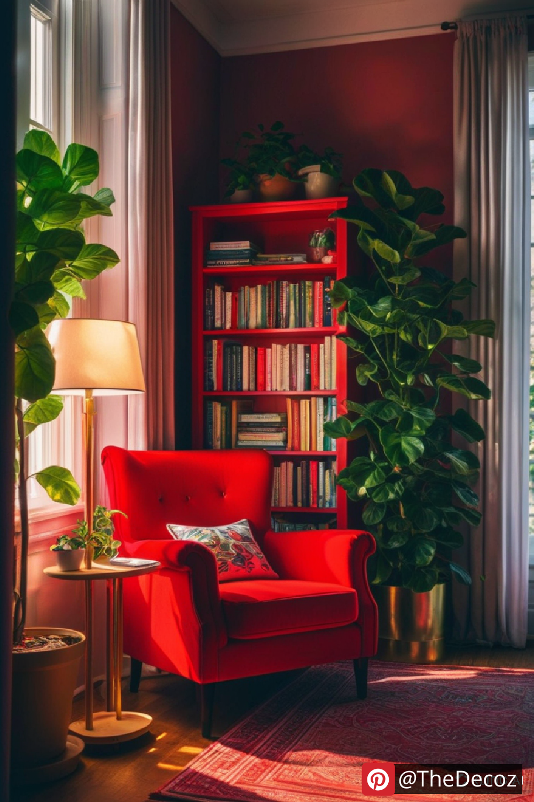
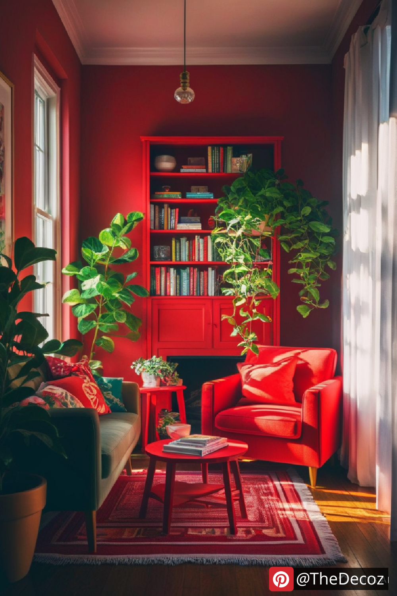
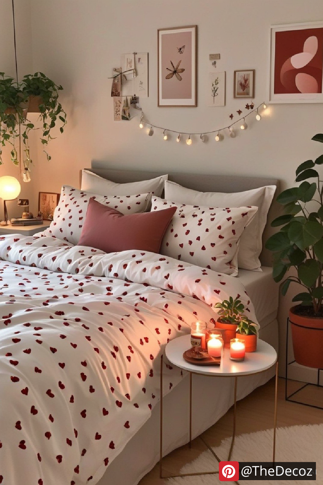
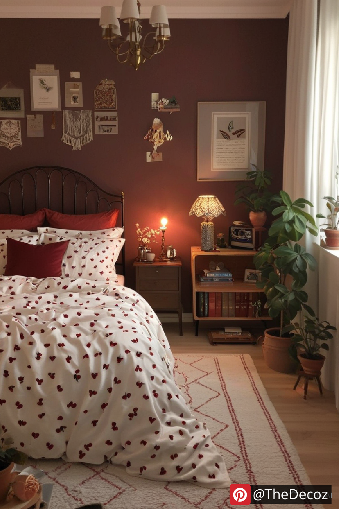
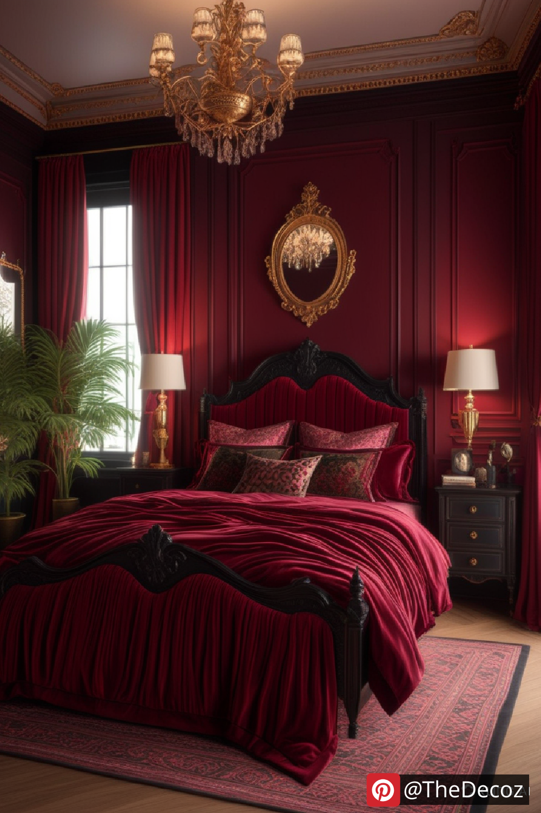

When it comes to interior design, color plays a crucial role in setting the mood and atmosphere of a space. Red room decor is a bold choice that can exude warmth, passion, and sophistication. Whether you want to create a cozy retreat, a dramatic statement, or a modern aesthetic, incorporating red into your home can transform any room into a stunning masterpiece.
Red is a powerful color that evokes strong emotions. It symbolizes love, energy, and confidence, making it an excellent choice for spaces where you want to encourage lively conversation and warmth. However, the intensity of red means it should be used strategically to achieve the desired effect without overwhelming the space.
Different shades of red can create various moods and aesthetics. Here are some popular choices:
Crimson – A deep, luxurious shade that adds drama and elegance.
Cherry Red – A vibrant and cheerful hue perfect for modern interiors.
Burgundy – A rich, sophisticated color that works well in traditional and vintage settings.
Rust Red – A warm, earthy shade that brings a rustic charm to any space.
Rose Red – A soft, romantic hue that pairs beautifully with neutral tones.
Adding red to your decor can be done in multiple ways, from subtle accents to bold statements. Here are some creative ways to integrate red into your home:
Painting one wall red can create a striking focal point without overwhelming the room. It works well in living rooms, dining areas, and even bedrooms when balanced with neutral or complementary colors.
A red sofa, armchair, or dining chairs can add vibrancy and style to your space. When paired with neutral walls and flooring, red furniture stands out beautifully without overpowering the room.
If you prefer a more subtle approach, red throw pillows, rugs, curtains, or artwork can infuse color into your decor without committing to large-scale changes.
Using red lampshades or LED lighting can create a warm and intimate ambiance, perfect for bedrooms and cozy sitting areas.
Red stimulates appetite, making it a great choice for kitchens and dining rooms. Red cabinets, backsplashes, or even dinnerware can create a vibrant and inviting atmosphere.
To achieve a harmonious look, balance red with neutral or complementary colors such as:
White – Creates a clean and classic contrast.
Black – Adds depth and drama.
Gold – Enhances a luxurious and elegant feel.
Gray – Softens red’s intensity for a modern touch.
Wood Tones – Adds warmth and a natural element to red decor.
Red room decor is a bold and beautiful choice that can enhance any space with energy, passion, and sophistication. Whether you opt for a statement piece or subtle accents, red can transform your home into an inviting and stylish haven. By balancing it with complementary colors and thoughtful design elements, you can create a space that feels both dramatic and welcoming.
    